Landmark far-lod: before | after
Switch ?landmarkFarLod=<m> (off by default). At street level it puts bespoke landmarks farther than <m> from the rider (eye distance per model) on their lod1. Each pair is the same page and pose with ?engine=own, world settled, the rule flipped in place, 1512×900 at dpr 2. No photos: this compares the game with itself. Triangles are every GL draw over 20 forced frames, per frame. The noise floor is a second off frame 5 s later.
Read: the loss is plainly visible at 300 m on three of five poses. Several lod1 meshes drop facade detail that reads at chase-camera distance: De Bijenkorf loses its lettering, mullions and gable curve; Hotel de l'Europe next to the Munttoren loses its banding and ornament; the Stopera/stadhuis and its neighbours lose every window. Westerkerk and Munttoren-Amstel lose only a few dozen px. Savings are 4-12 % of drawn triangles (80k-227k per frame). On these frames the rule is not a no-visible-loss cut; it needs better lod1s or a per-model exemption first.
| Pose | Threshold | Tris off | Tris on | Saved | Draws off / on | Px changed beyond noise | Noise px |
|---|---|---|---|---|---|---|---|
| Westerkerk tower from the Prinsengracht | 450 m | 2,135,122 | 2,055,306 | 79,816 (3.7 %) | 222 / 222 | 1,729 | 0 |
| Westerkerk tower from the Prinsengracht | 300 m | 2,135,122 | 2,055,306 | 79,816 (3.7 %) | 222 / 222 | 1,729 | 0 |
| Munttoren from the Amstel | 300 m | 1,927,583 | 1,780,739 | 146,844 (7.6 %) | 234 / 237 | 6,521 | 0 |
| Zuiderkerk from the Zwanenburgwal | 300 m | 1,850,856 | 1,733,407 | 117,449 (6.3 %) | 248 / 248 | 97,109 | 0 |
| Centraal / Damrak skyline from the Dam | 300 m | 2,171,173 | 2,013,552 | 157,621 (7.3 %) | 223 / 223 | 55,857 | 314,517 |
| Rokin towards the Dam (Beurs, Nieuwe Kerk, Palace) | 300 m | 1,935,413 | 1,708,189 | 227,224 (11.7 %) | 248 / 248 | 70,654 | 307,016 |
Westerkerk tower from the Prinsengracht — far-lod 450 m
Read: Identical frame to 300 m at this pose (same triangles, same pixels); the Westerkerk itself is 720 m from the eye and was already the same in both.
Crop, 2× (480×300 device px at 1560, 0)
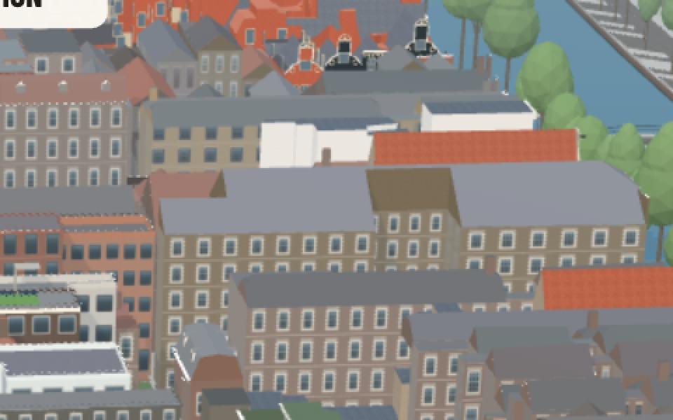

Full frame, 1512×900 dpr 2
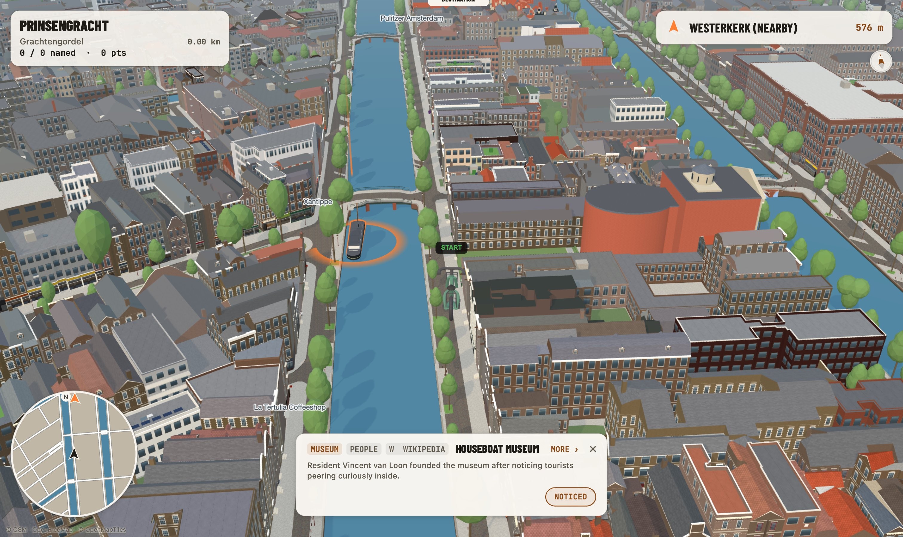
43 landmarks moved to lod1 (eye distance; many are off screen)
- pulitzer-amsterdam full→lod1 @525 m
- boom-chicago full→lod1 @564 m
- athenaeum full→lod1 @462 m
- ordinary-0363100012175754 full→lod1 @543 m
- begijnhofkapel full→lod1 @505 m
- raadhuisstraat-galerij full→lod1 @649 m
- fatih-moskee full→lod1 @634 m
- europarking-marnixstraat full→lod1 @489 m
- handelsbank-singel-250 full→lod1 @657 m
- oude-lutherse-kerk full→lod1 @484 m
- bungehuis full→lod1 @628 m
- english-reformed-church full→lod1 @542 m
- westerkerk full→lod1 @720 m
- amsterdam-museum full→lod1 @597 m
- nieuw-engeland full→lod1 @467 m
- begijnhof full→lod1 @567 m
- maagdenhuis full→lod1 @531 m
- huis-bartolotti full→lod1 @729 m
- ordinary-0363100012168534 full→lod1 @514 m
- coymanshuis full→lod1 @745 m
- ordinary-0363100012165119 full→lod1 @713 m
- koningsplein-1 full→lod1 @503 m
- telefooncentrale-spuistraat full→lod1 @722 m
- fire-station-hendrik full→lod1 @686 m
- telegraaf-gebouw full→lod1 @701 m
- ordinary-0363100012168201 full→lod1 @653 m
- arti-et-amicitiae full→lod1 @623 m
- hajenius-rokin full→lod1 @661 m
- ordinary-0363100012167569 full→lod1 @720 m
- amsterdam-dungeon full→lod1 @686 m
- cafe-riche-rokin full→lod1 @676 m
- magna-plaza full→lod1 @796 m
- politiebureau-raampoort full→lod1 @769 m
- kalvertoren full→lod1 @618 m
- electric-ladyland full→lod1 @846 m
- bloemenmarkt-stalls full→lod1 @605 m
- palace-on-the-dam full→lod1 @822 m
- madame-tussauds full→lod1 @834 m
- oude-turfmarkt-139 full→lod1 @746 m
- ordinary-0363100012168028 full→lod1 @913 m
- ordinary-0363100012176271 full→lod1 @928 m
- nieuwe-kerk full→lod1 @905 m
- de-dolphijn full→lod1 @980 m
Westerkerk tower from the Prinsengracht — far-lod 300 m
Read: Near-invisible: 1,729 px beyond noise, a few small rooftop pieces in the distance. The six extra swaps between 300 and 450 m were behind the camera, so the frame is identical to the 450 m one.
Crop, 2× (480×300 device px at 1560, 0)

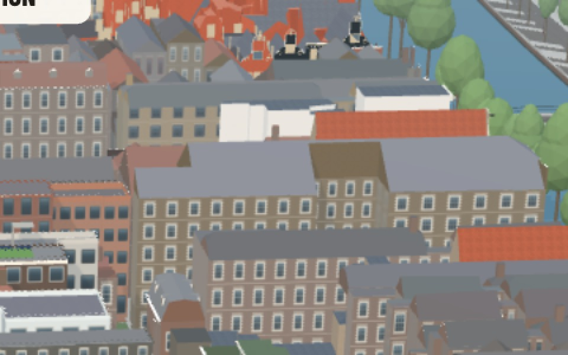
Full frame, 1512×900 dpr 2


49 landmarks moved to lod1 (eye distance; many are off screen)
- pulitzer-amsterdam full→lod1 @525 m
- boom-chicago full→lod1 @564 m
- krijtberg full→lod1 @387 m
- athenaeum full→lod1 @462 m
- ordinary-0363100012175754 full→lod1 @543 m
- hoofdbureau-elandsgracht full→lod1 @346 m
- begijnhofkapel full→lod1 @505 m
- raadhuisstraat-galerij full→lod1 @649 m
- singelkerk full→lod1 @410 m
- fatih-moskee full→lod1 @634 m
- europarking-marnixstraat full→lod1 @489 m
- handelsbank-singel-250 full→lod1 @657 m
- oude-lutherse-kerk full→lod1 @484 m
- bungehuis full→lod1 @628 m
- odeon-singel full→lod1 @437 m
- de-makroon full→lod1 @359 m
- english-reformed-church full→lod1 @542 m
- broekmans-koningsplein full→lod1 @434 m
- westerkerk full→lod1 @720 m
- amsterdam-museum full→lod1 @597 m
- nieuw-engeland full→lod1 @467 m
- begijnhof full→lod1 @567 m
- maagdenhuis full→lod1 @531 m
- huis-bartolotti full→lod1 @729 m
- ordinary-0363100012168534 full→lod1 @514 m
- coymanshuis full→lod1 @745 m
- ordinary-0363100012165119 full→lod1 @713 m
- koningsplein-1 full→lod1 @503 m
- telefooncentrale-spuistraat full→lod1 @722 m
- fire-station-hendrik full→lod1 @686 m
- telegraaf-gebouw full→lod1 @701 m
- ordinary-0363100012168201 full→lod1 @653 m
- arti-et-amicitiae full→lod1 @623 m
- hajenius-rokin full→lod1 @661 m
- ordinary-0363100012167569 full→lod1 @720 m
- amsterdam-dungeon full→lod1 @686 m
- cafe-riche-rokin full→lod1 @676 m
- magna-plaza full→lod1 @796 m
- politiebureau-raampoort full→lod1 @769 m
- kalvertoren full→lod1 @618 m
- electric-ladyland full→lod1 @846 m
- bloemenmarkt-stalls full→lod1 @605 m
- palace-on-the-dam full→lod1 @822 m
- madame-tussauds full→lod1 @834 m
- oude-turfmarkt-139 full→lod1 @746 m
- ordinary-0363100012168028 full→lod1 @913 m
- ordinary-0363100012176271 full→lod1 @928 m
- nieuwe-kerk full→lod1 @905 m
- de-dolphijn full→lod1 @980 m
Munttoren from the Amstel — far-lod 300 m
Read: Small loss: one brick block's windows go from glazed slots to darker flat panels. 6,521 px. You would not notice it riding.
Crop, 2× (480×300 device px at 648, 66)
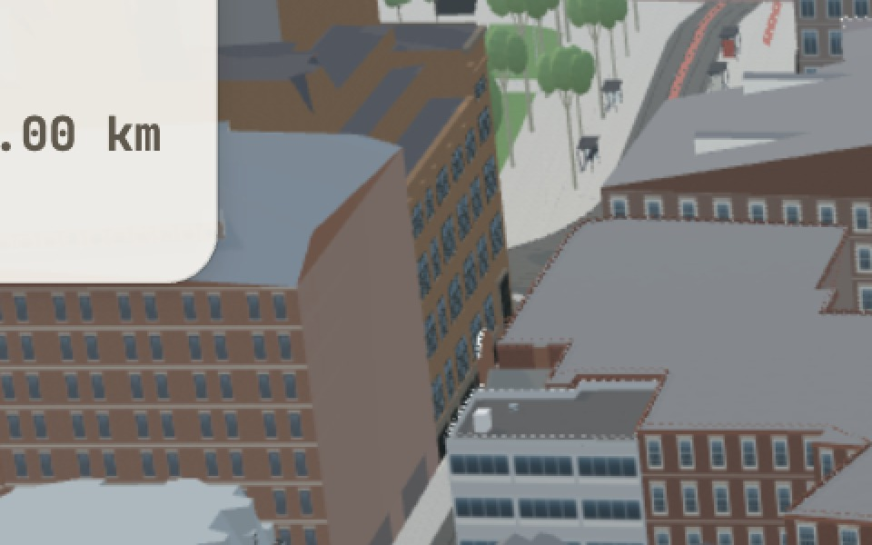
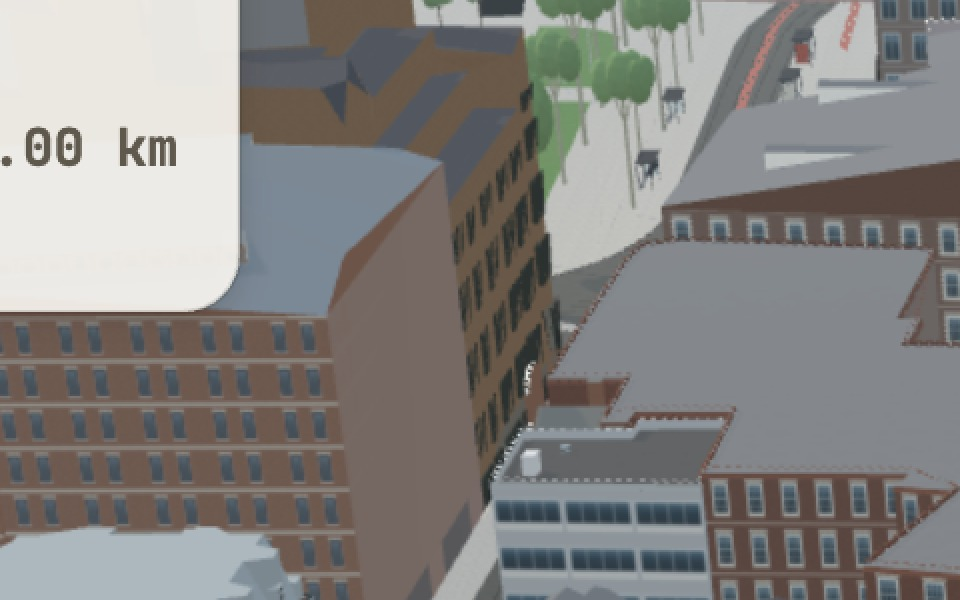
Full frame, 1512×900 dpr 2


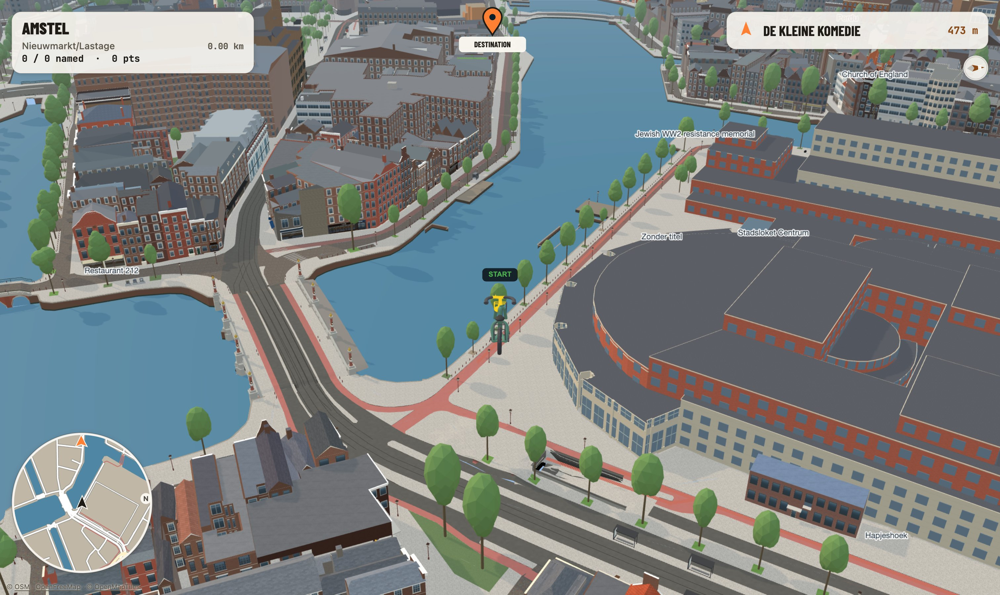
67 landmarks moved to lod1 (eye distance; many are off screen)
- willet-holthuysen full→lod1 @356 m
- utrechtsestraat-9-17 full→lod1 @410 m
- de-kroon-rembrandtplein full→lod1 @482 m
- old-bell-rembrandtplein full→lod1 @452 m
- rembrandt-house full→lod1 @347 m
- christ-church-groenburgwal full→lod1 @465 m
- escape-rembrandtplein full→lod1 @510 m
- rembrandtmonument full→lod1 @499 m
- schiller-rembrandtplein full→lod1 @503 m
- kleine-komedie full→lod1 @530 m
- pentagon full→lod1 @410 m
- academie-theater-dans full→lod1 @361 m
- waldorf-astoria-herengracht full→lod1 @510 m
- doelen-hotel full→lod1 @563 m
- huis-de-pinto full→lod1 @435 m
- perdu full→lod1 @575 m
- de-jaren full→lod1 @590 m
- magere-brug full→lod1 @377 m
- zuiderkerk full→lod1 @486 m
- universiteitstheater full→lod1 @605 m
- nieuwe-doelenstraat-12 full→lod1 @615 m
- tuschinski full→lod1 @632 m
- binnengasthuis-kloveniersburgwal full→lod1 @603 m
- uva-binnengasthuisstraat-9 full→lod1 @657 m
- hotel-de-l-europe full→lod1 @659 m
- muntplein-1 full→lod1 @676 m
- oudemanhuispoort full→lod1 @654 m
- oost-indisch-huis full→lod1 @619 m
- uilenburger-synagoge full→lod1 @415 m
- huis-aan-drie-grachten full→lod1 @686 m
- sint-jorishof full→lod1 @638 m
- trippenhuis full→lod1 @588 m
- munttoren-amsterdam full→lod1 @719 m
- banks-mansion full→lod1 @730 m
- oude-turfmarkt-139 full→lod1 @733 m
- allard-pierson full→lod1 @734 m
- carlton-hotel full→lod1 @740 m
- royal-theater-carre full→lod1 @490 m
- spaarbank-singel-548 full→lod1 @767 m
- tobacco-theater full→lod1 @769 m
- amstelkerk full→lod1 @694 m
- sofitel-the-grand-1926 full→lod1 @742 m
- foam full→lod1 @764 m
- wine-guildhall full→lod1 @696 m
- frascati full→lod1 @784 m
- ordinary-0363100012168482 full→lod1 @794 m
- koetshuis-keizersgracht-607 full→lod1 @786 m
- ordinary-0363100012167975 full→lod1 @793 m
- hash-marihuana-hemp-museum full→lod1 @738 m
- de-bazel full→lod1 @818 m
- kalvertoren full→lod1 @839 m
- kattenkabinet full→lod1 @838 m
- brakke-grond full→lod1 @813 m
- bloemenmarkt-stalls full→lod1 @864 m
- arti-et-amicitiae full→lod1 @867 m
- hajenius-rokin full→lod1 @870 m
- amsterdam-dungeon full→lod1 @890 m
- cafe-riche-rokin full→lod1 @875 m
- ordinary-0363100012168201 full→lod1 @901 m
- ordinary-0363100012243483 full→lod1 @875 m
- ordinary-0363100012254471 full→lod1 @894 m
- begijnhof full→lod1 @949 m
- vijzelbank full→lod1 @924 m
- amsterdam-museum full→lod1 @980 m
- ordinary-0363100012175018 full→lod1 @963 m
- ordinary-0363100012167569 full→lod1 @971 m
- telegraaf-gebouw full→lod1 @1018 m
Zuiderkerk from the Zwanenburgwal — far-lod 300 m
Read: Clearly visible: the large cream building (stadhuis / Stopera, 372 m) loses every window and becomes a blank slab; the foreground roofs lose their window rows. 97,109 px.
Crop, 2× (480×300 device px at 1416, 18)
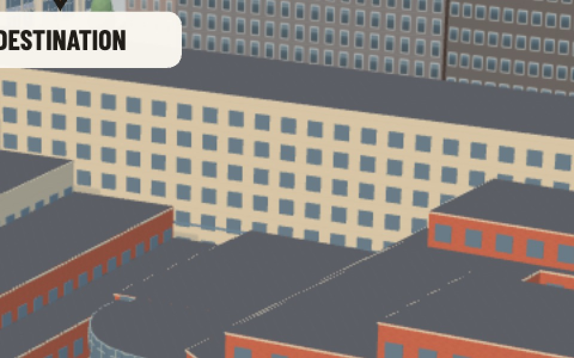
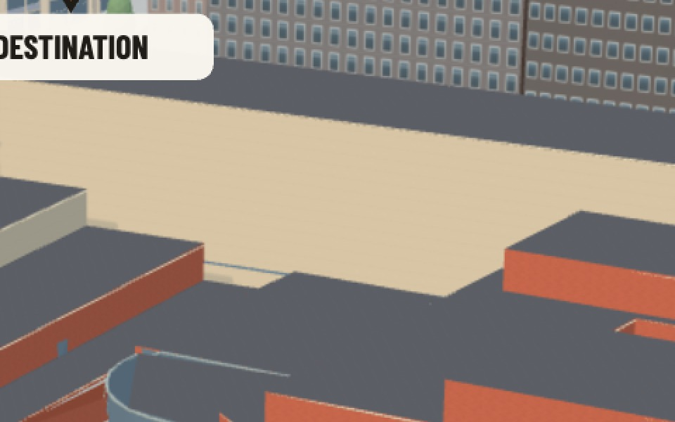
Full frame, 1512×900 dpr 2

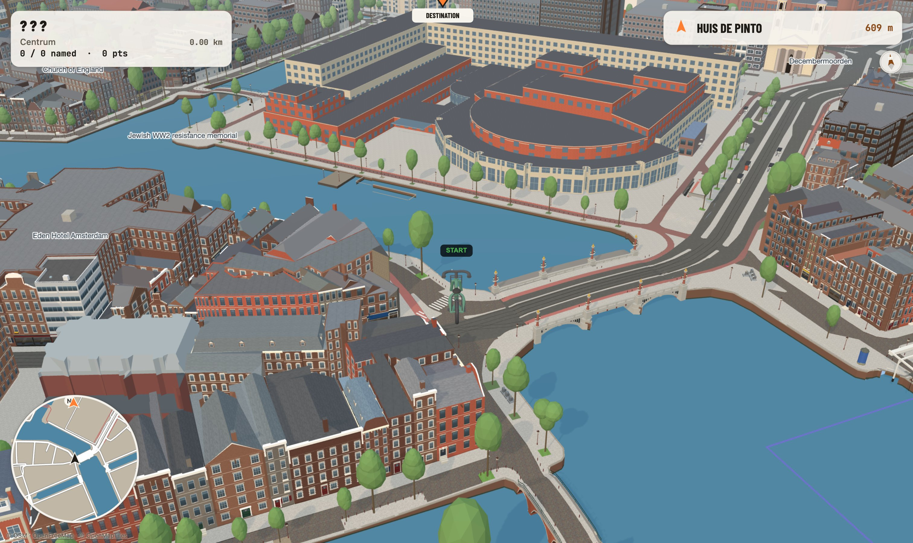

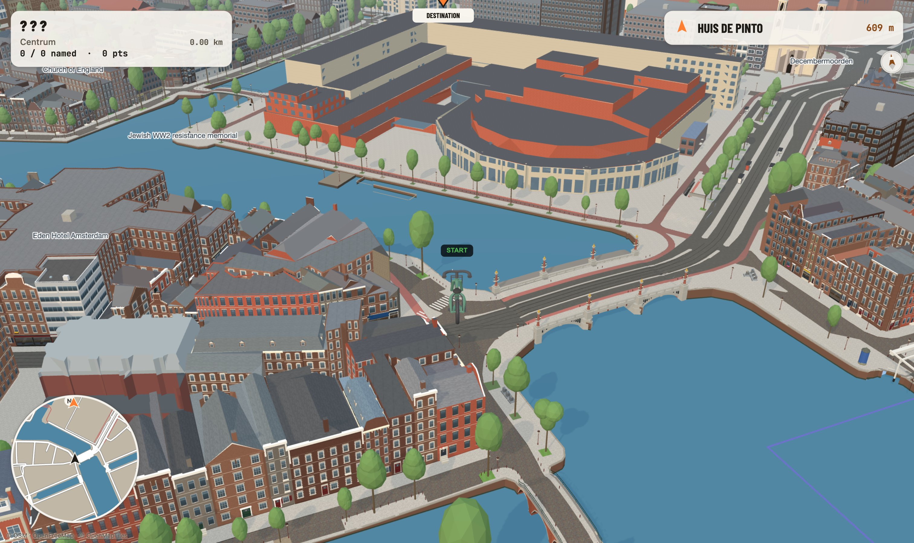
69 landmarks moved to lod1 (eye distance; many are off screen)
- stadhuis full→lod1 @372 m
- jewish-museum full→lod1 @392 m
- academie-van-bouwkunst full→lod1 @413 m
- de-kroon-rembrandtplein full→lod1 @327 m
- rembrandtmonument full→lod1 @301 m
- escape-rembrandtplein full→lod1 @359 m
- mozes-en-aaronkerk full→lod1 @471 m
- christ-church-groenburgwal full→lod1 @478 m
- kleine-komedie full→lod1 @380 m
- rembrandt-house full→lod1 @535 m
- holocaust-namenmonument full→lod1 @371 m
- portuguese-synagogue full→lod1 @488 m
- reinwardt-academie full→lod1 @420 m
- jodenbreestraat-11 full→lod1 @551 m
- doelen-hotel full→lod1 @502 m
- pentagon full→lod1 @578 m
- academie-theater-dans full→lod1 @583 m
- de-jaren full→lod1 @503 m
- universiteitstheater full→lod1 @508 m
- perdu full→lod1 @553 m
- nfta-markenplein full→lod1 @558 m
- nieuwe-doelenstraat-12 full→lod1 @506 m
- tuschinski full→lod1 @432 m
- huis-de-pinto full→lod1 @623 m
- zuiderkerk full→lod1 @636 m
- hotel-de-l-europe full→lod1 @526 m
- binnengasthuis-kloveniersburgwal full→lod1 @607 m
- muntplein-1 full→lod1 @509 m
- uva-binnengasthuisstraat-9 full→lod1 @604 m
- rapenburgerstraat-220 full→lod1 @623 m
- oudemanhuispoort full→lod1 @630 m
- munttoren-amsterdam full→lod1 @548 m
- hortus-greenhouses full→lod1 @568 m
- banks-mansion full→lod1 @483 m
- huis-aan-drie-grachten full→lod1 @650 m
- carlton-hotel full→lod1 @524 m
- oost-indisch-huis full→lod1 @721 m
- sint-jorishof full→lod1 @718 m
- oude-turfmarkt-139 full→lod1 @637 m
- uilenburger-synagoge full→lod1 @721 m
- trippenhuis full→lod1 @745 m
- allard-pierson full→lod1 @662 m
- spaarbank-singel-548 full→lod1 @567 m
- foam full→lod1 @469 m
- valkenburgerstraat-69 full→lod1 @707 m
- koetshuis-keizersgracht-607 full→lod1 @491 m
- ordinary-0363100012168482 full→lod1 @592 m
- ordinary-0363100012167975 full→lod1 @504 m
- tobacco-theater full→lod1 @718 m
- de-bazel full→lod1 @545 m
- sofitel-the-grand-1926 full→lod1 @767 m
- luther-museum full→lod1 @630 m
- kalvertoren full→lod1 @671 m
- frascati full→lod1 @770 m
- wine-guildhall full→lod1 @831 m
- hash-marihuana-hemp-museum full→lod1 @833 m
- bloemenmarkt-stalls full→lod1 @672 m
- rapenburgerstraat-4 full→lod1 @791 m
- brakke-grond full→lod1 @826 m
- hemp-gallery full→lod1 @862 m
- cafe-riche-rokin full→lod1 @809 m
- amsterdam-dungeon full→lod1 @835 m
- montelbaanstoren-amsterdam full→lod1 @913 m
- vijzelbank full→lod1 @614 m
- fire-station-nico full→lod1 @876 m
- ordinary-0363100012254471 full→lod1 @912 m
- scheltema full→lod1 @955 m
- west-indisch-pakhuis full→lod1 @1010 m
- ordinary-0363100012243483 full→lod1 @880 m
Centraal / Damrak skyline from the Dam — far-lod 300 m
Read: Clearly visible: De Bijenkorf (303 m, just over the threshold) loses its lettering, window mullions and the curved gable; the windows become dark blobs. Large noise floor here is animation elsewhere in the frame; the crop follows only changes beyond it.
Crop, 2× (480×300 device px at 1608, 498)
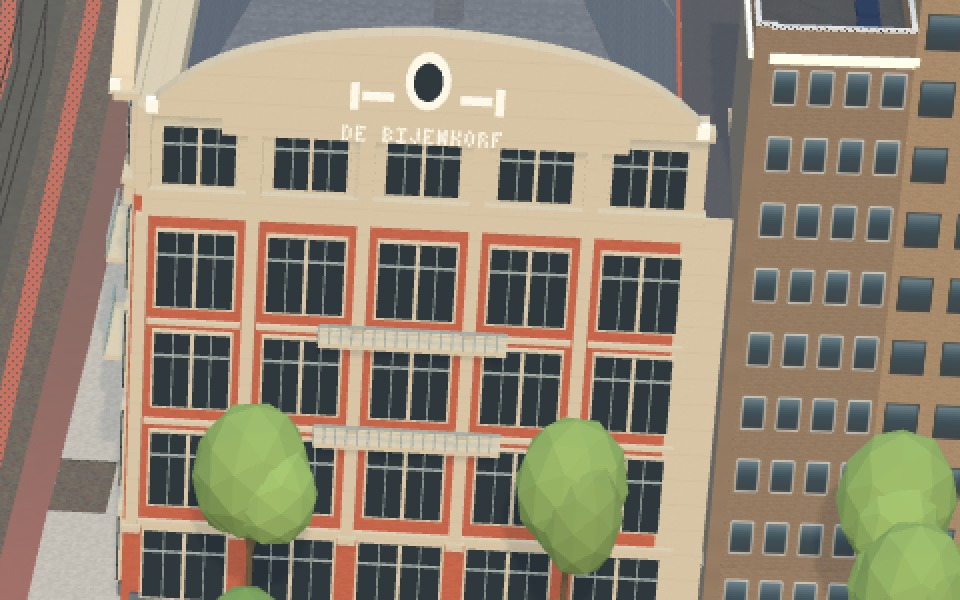
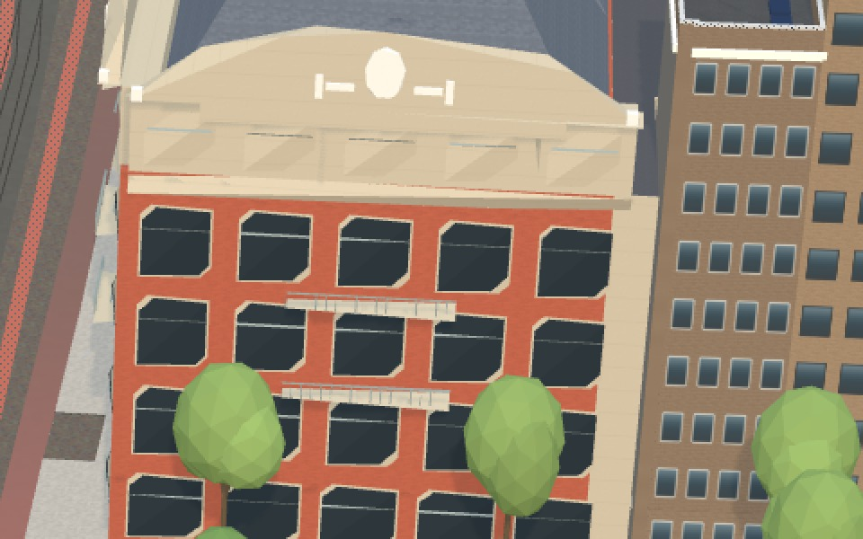
Full frame, 1512×900 dpr 2

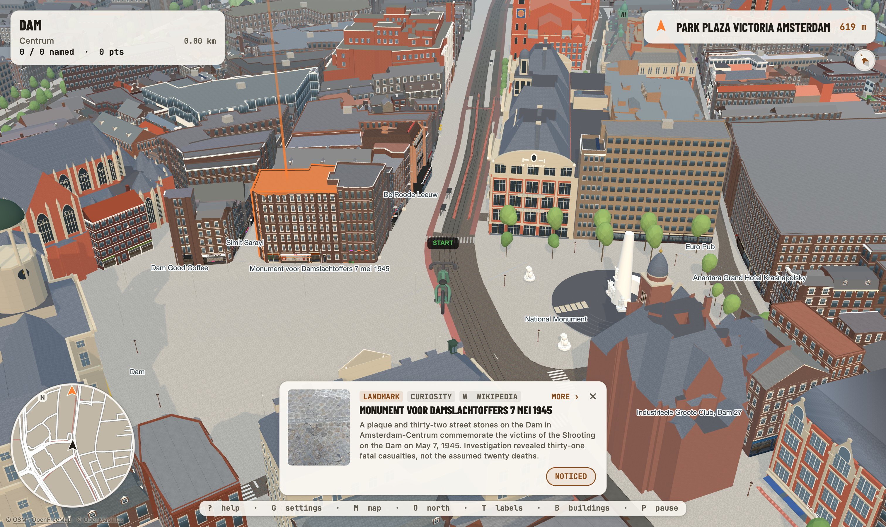

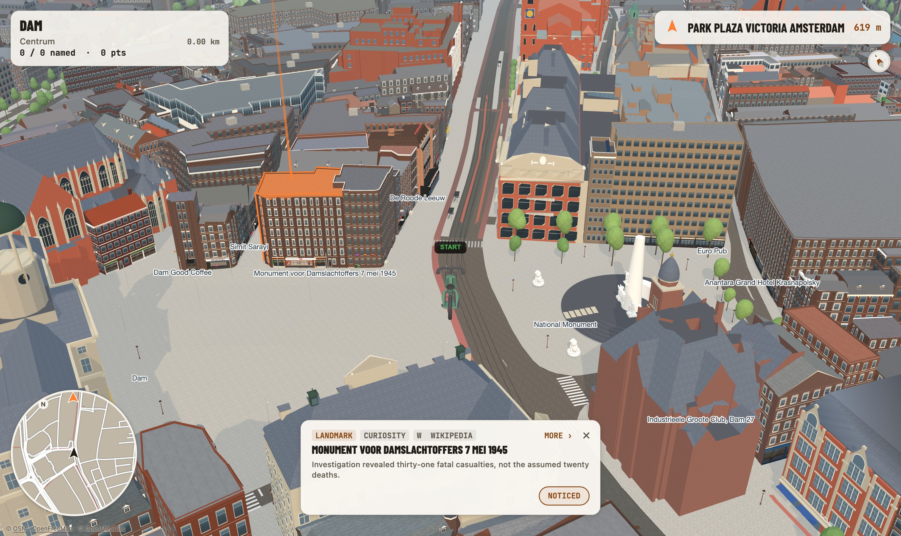
53 landmarks moved to lod1 (eye distance; many are off screen)
- de-bijenkorf full→lod1 @303 m
- brand-bij-ca full→lod1 @374 m
- condomerie full→lod1 @383 m
- effectenbeurs full→lod1 @403 m
- w139 full→lod1 @395 m
- ordinary-0363100012168028 full→lod1 @375 m
- hash-marihuana-hemp-museum full→lod1 @369 m
- de-beurs-van-berlage full→lod1 @506 m
- hemp-gallery full→lod1 @395 m
- bulldog-first full→lod1 @477 m
- casa-rosso full→lod1 @442 m
- ordinary-0363100012176271 full→lod1 @441 m
- oude-kerk full→lod1 @539 m
- handelsbank-singel-250 full→lod1 @301 m
- damrak-37 full→lod1 @572 m
- de-dolphijn full→lod1 @476 m
- politie-nieuwezijds-voorburgwal full→lod1 @574 m
- wine-guildhall full→lod1 @466 m
- sint-jorishof full→lod1 @403 m
- red-light-secrets full→lod1 @556 m
- oost-indisch-huis full→lod1 @442 m
- erotic-museum full→lod1 @579 m
- dominicuskerk full→lod1 @609 m
- banana-bar full→lod1 @602 m
- sexmuseum-venustempel full→lod1 @672 m
- ons-lieve-heer-op-solder full→lod1 @653 m
- he-hua-temple full→lod1 @624 m
- binnengasthuis-kloveniersburgwal full→lod1 @405 m
- bitterzoet full→lod1 @671 m
- trippenhuis full→lod1 @546 m
- waag full→lod1 @612 m
- moulin-rouge-amsterdam full→lod1 @662 m
- multatuli full→lod1 @658 m
- ronde-lutherse-kerk full→lod1 @718 m
- huis-met-de-hoofden full→lod1 @611 m
- victoria-hotel full→lod1 @751 m
- zuiderkerk full→lod1 @584 m
- lloyd-prins-hendrikkade-33 full→lod1 @768 m
- in-t-aepjen full→lod1 @780 m
- barbizon-palace full→lod1 @807 m
- rode-hoed full→lod1 @704 m
- huis-de-pinto full→lod1 @662 m
- pentagon full→lod1 @650 m
- sint-nicolaas full→lod1 @842 m
- batavia-prins-hendrikkade full→lod1 @884 m
- schreierstoren full→lod1 @894 m
- cafe-kobalt full→lod1 @903 m
- ordinary-0363100012167736 full→lod1 @838 m
- academie-theater-dans full→lod1 @746 m
- scheepvaarthuis full→lod1 @889 m
- centraal-station full→lod1 @950 m
- doubletree-centraal full→lod1 @1073 m
- stationsplein-paviljoens full→lod1 @893 m
Rokin towards the Dam (Beurs, Nieuwe Kerk, Palace) — far-lod 300 m
Read: Clearly visible: Hotel de l'Europe (327 m) loses its striped brick and ornament, and the brick row behind the Munttoren loses its window frames. Worst pair of the five.
Crop, 2× (480×300 device px at 2544, 402)
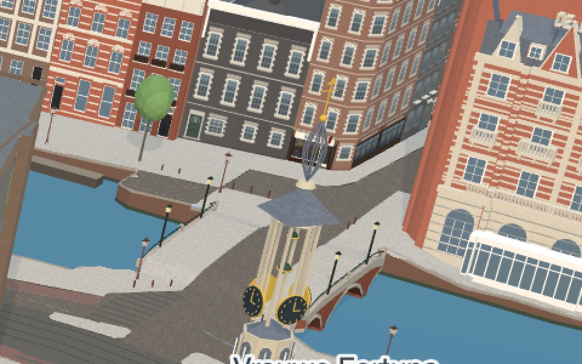
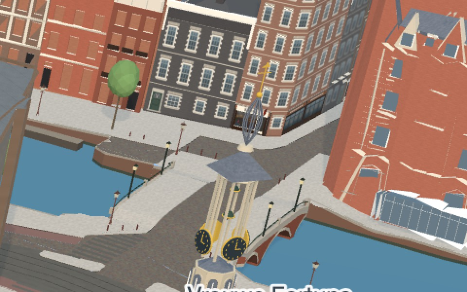
Full frame, 1512×900 dpr 2

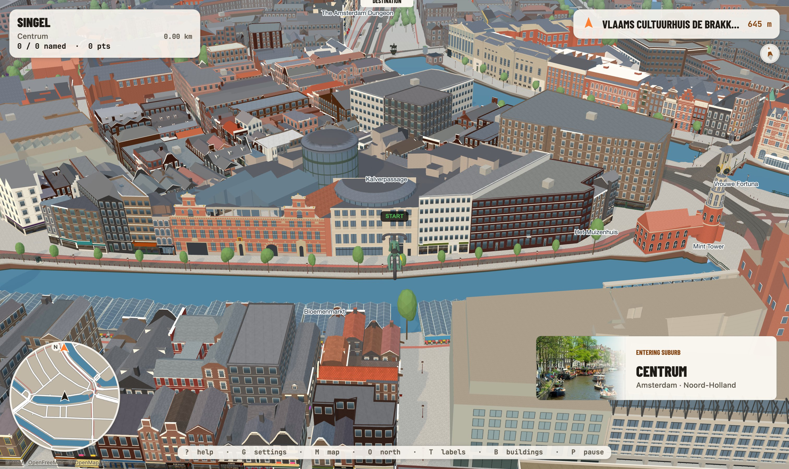

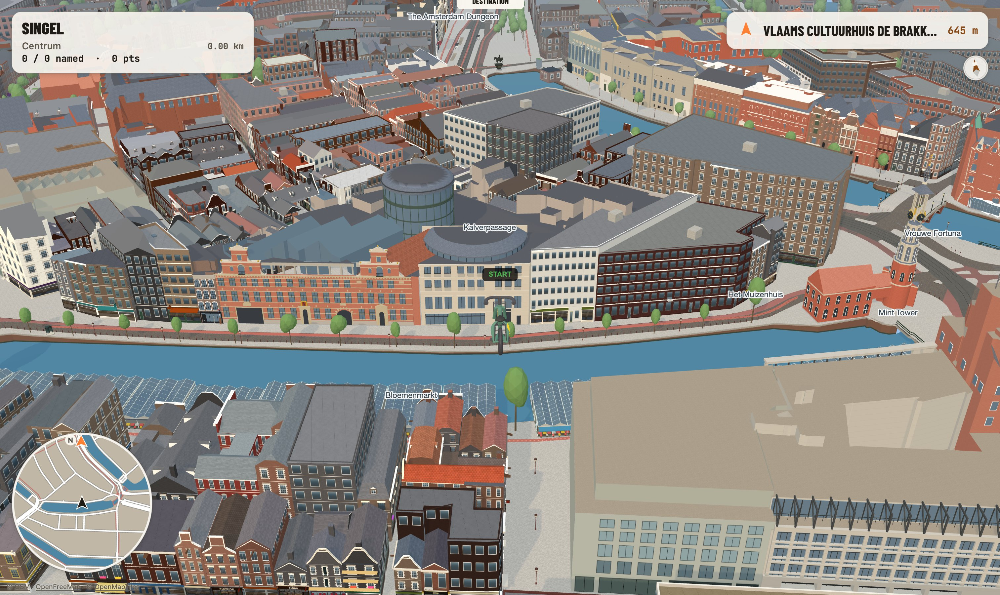
81 landmarks moved to lod1 (eye distance; many are off screen)
- hotel-de-l-europe full→lod1 @327 m
- oude-turfmarkt-139 full→lod1 @392 m
- arti-et-amicitiae full→lod1 @398 m
- maagdenhuis full→lod1 @369 m
- nieuwe-doelenstraat-12 full→lod1 @377 m
- oude-lutherse-kerk full→lod1 @364 m
- odeon-singel full→lod1 @304 m
- universiteitstheater full→lod1 @398 m
- allard-pierson full→lod1 @444 m
- singelkerk full→lod1 @323 m
- begijnhof full→lod1 @455 m
- english-reformed-church full→lod1 @452 m
- de-jaren full→lod1 @416 m
- athenaeum full→lod1 @427 m
- krijtberg full→lod1 @353 m
- hajenius-rokin full→lod1 @478 m
- uva-binnengasthuisstraat-9 full→lod1 @470 m
- tobacco-theater full→lod1 @498 m
- begijnhofkapel full→lod1 @463 m
- cafe-riche-rokin full→lod1 @507 m
- kleine-komedie full→lod1 @375 m
- ordinary-0363100012168201 full→lod1 @511 m
- doelen-hotel full→lod1 @457 m
- huis-aan-drie-grachten full→lod1 @508 m
- escape-rembrandtplein full→lod1 @390 m
- amsterdam-dungeon full→lod1 @542 m
- oudemanhuispoort full→lod1 @525 m
- perdu full→lod1 @519 m
- amsterdam-museum full→lod1 @545 m
- de-kroon-rembrandtplein full→lod1 @409 m
- rembrandtmonument full→lod1 @386 m
- metz-keizersgracht-455 full→lod1 @334 m
- frascati full→lod1 @587 m
- schiller-rembrandtplein full→lod1 @386 m
- binnengasthuis-kloveniersburgwal full→lod1 @567 m
- canals-museum full→lod1 @450 m
- niod full→lod1 @476 m
- cromhouthuizen full→lod1 @497 m
- old-bell-rembrandtplein full→lod1 @436 m
- leidsestraat-40 full→lod1 @371 m
- christ-church-groenburgwal full→lod1 @573 m
- sofitel-the-grand-1926 full→lod1 @655 m
- ordinary-0363100012175754 full→lod1 @636 m
- brakke-grond full→lod1 @664 m
- ordinary-0363100012167569 full→lod1 @667 m
- huis-marseille full→lod1 @499 m
- waldorf-astoria-herengracht full→lod1 @422 m
- utrechtsestraat-9-17 full→lod1 @476 m
- telegraaf-gebouw full→lod1 @692 m
- ordinary-0363100012254471 full→lod1 @720 m
- willet-holthuysen full→lod1 @539 m
- sint-jorishof full→lod1 @726 m
- scheltema full→lod1 @766 m
- bungehuis full→lod1 @750 m
- oost-indisch-huis full→lod1 @764 m
- de-uitkijk full→lod1 @490 m
- industrieele-groote-club full→lod1 @795 m
- ordinary-0363100012243483 full→lod1 @678 m
- madame-tussauds full→lod1 @799 m
- hash-marihuana-hemp-museum full→lod1 @811 m
- telefooncentrale-spuistraat full→lod1 @823 m
- stadhuis full→lod1 @714 m
- felix-meritis full→lod1 @728 m
- national-monument-on-the-dam full→lod1 @844 m
- blauwbrug full→lod1 @674 m
- zuiderkerk full→lod1 @800 m
- hemp-gallery full→lod1 @854 m
- palace-on-the-dam full→lod1 @863 m
- collectie-six full→lod1 @654 m
- ordinary-0363100012165119 full→lod1 @854 m
- pentagon full→lod1 @801 m
- handelsbank-singel-250 full→lod1 @864 m
- rembrandt-house full→lod1 @813 m
- wine-guildhall full→lod1 @878 m
- trippenhuis full→lod1 @865 m
- huis-de-pinto full→lod1 @849 m
- casa-rosso full→lod1 @923 m
- academie-theater-dans full→lod1 @877 m
- raadhuisstraat-galerij full→lod1 @960 m
- pulitzer-amsterdam full→lod1 @953 m
- waag full→lod1 @1026 m